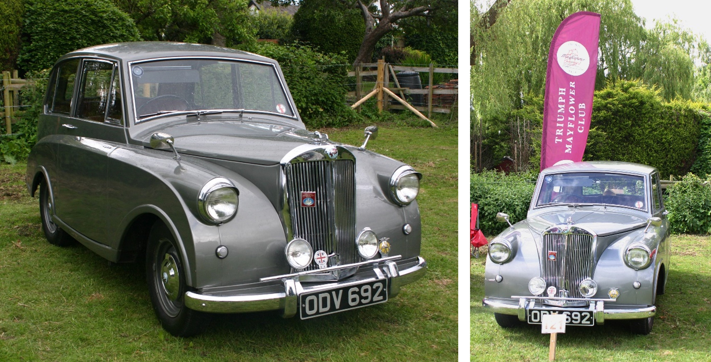
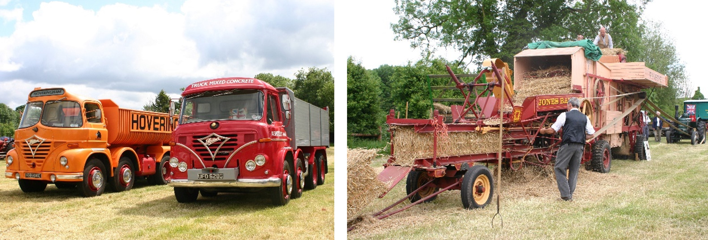
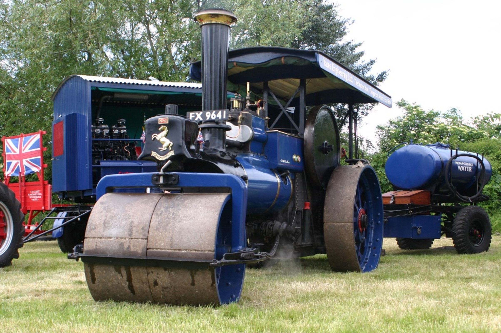
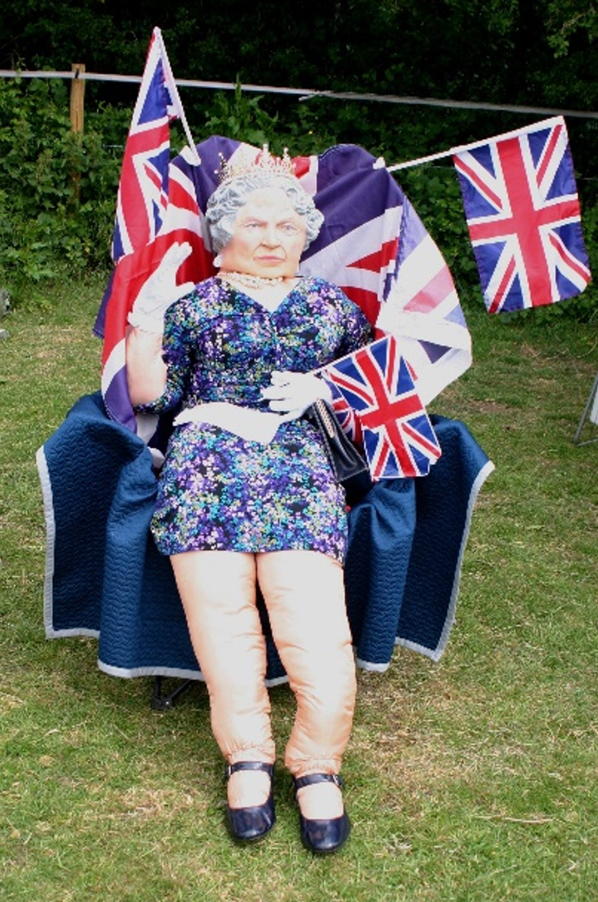
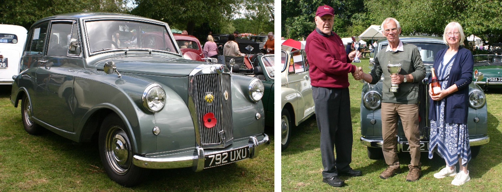

<link href="{{ site.baseurl }}/events/article.css" rel="stylesheet" type="text/css">
<main>
    <article>
        <ol id="breadcrumb">
            <li>
                <a href="{{ site.baseurl }}/">Home</a>
            </li>
            <li>
                <a href="{{ site.baseurl }}/events">Events</a>
            </li>
            <li>
                <a href="{{ site.baseurl }}/events/rallies">TMC Rallies</a>
            </li>
            <li>Northern Rally 2022</li>
        </ol>
        <div id="content">
            <h1>Northern Rally – Hoveringham, Nottinghamshire</h1>
            <h2>29<sup>th</sup> May 2022</h2>
            <p>It was time for the first Mayflower Rally of the year (kindly suggested as a new location at the AGM in March). The setting was Hoveringham, a village between Nottingham and Newark; the date was Sunday 29<sup>th</sup> May.</p>
            <p>The registration period was very short, but with modern social media and the club website, the word was spread to pre-register for the event.</p>
            <p>I had the honour of accompanying John Castle to the show, in his Triumph Mayflower. We set off in good time, with sat-nav on standby in case my navigation failed! It was a good journey, using the A46 and travelling at a steady 50 mph, taking us 1 hr 20 mins to arrive at the show area and park-up.</p>
            
            <p>We were warmly welcomed by the volunteer marshals, and given a printed programme and Mammoth mug. Inside it were detailed all the exhibitors, with 173 participants. There were 3 Mayflowers pre-registered, and we managed to have 2 turn-up – this was great, but due to arrivals being at different times, the cars had to be parked separately. We did have consecutive numbers for all 3 to be together, but if we return next year and contact the organiser earlier, we might be able to have a larger area reserved for the club.</p>
            <p>The show officially started at 12 noon, with cars, tractors, lorries, steam rollers and equipment all arranged in two large fields.</p>
            
            
            
            <p>We were treated to a gymnastics display, equipment demonstrations, a dog show, and parades in the main event ring from some of the exhibits on display. We even had a visit from the Queen!</p>
            <p>After enjoying a good look around all the stall holders’ crafts and edible goodies, we went back to the car and decided to present just one award, to the other Mayflower in attendance.</p>
            <p>As this was classed as the Northern Rally, the <em>‘Peter Benfield Chairmans Cup’</em> was awarded to David and Janet Frost (1202) who came in a grey 1953 Mayflower, 792 UXU.</p>
            <p>John Castle’s Mayflower, ODV 692, is also grey and 1953, so we had a matching pair.</p>
            
            <p>The pre-registration number acted as a raffle ticket on the day, and the organisers drew out David’s number, so he collected a bottle of fizz for Janet and himself to enjoy when they got home. The weather was kind, and we only had a few spots of precipitation, which didn’t dampen any enthusiasm for the cars on show.</p>
            <p>Hoveringham proved to be a good venue; well organised, with fascinating exhibits and shows for all the family, and a pleasant day out for everybody.</p>
            <p>We had a good journey back to Leicestershire, re-tracing our steps. The Mayflower was sounding great, and all ready to go many more miles on another trip in the coming weeks.</p>
            <p>John Banks</p>
        </div>
    </article>
    <aside>
        <h2>Members’ cars in attendance</h2>
        <ul class="disableListStyles">
            <li>
                <h3>David and Janet Frost</h3>
                <div>
                    <div class="numberPlateMarker">792 UXU</div>
                </div>
                <div>
                    <div class="awardMarker">Chairman’s Cup</div>
                </div>
            </li>
            <li>
                <h3>John Castle</h3>
                <div>
                    <div class="numberPlateMarker">ODV 692</div>
                </div>
            </li>
        </ul>
    </aside>
</main>
